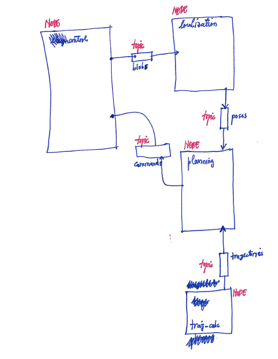
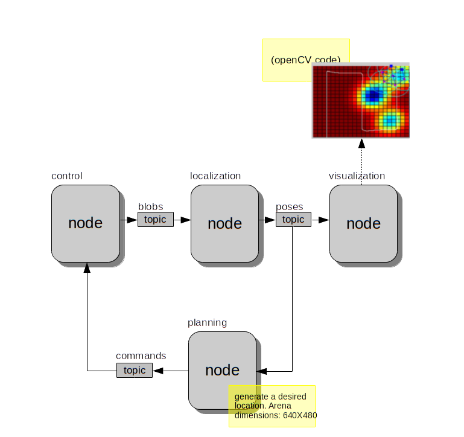

Ahmet's Robots
Table of Contents
1 ebug_swarm_control
1.1 Instructions
Just drop the ebug_swarm_control folder into
/home/<username>/catkin_ws/src and issue a catkin_make as per
manuals/tutorials.
I have made also a launch file.
Jeez!

Figure 1: Ahmet's New Node Structure
1.2 Neverending Story

Figure 2: New Ahmet's Delirium
Please reference the schema of Figure 2.
Main Objective: move Erwyn's Code to ROS system
- Target Node
- Localization Node
- Link Between Blobs and Poses
- General Directive
- Asynchronous Operations
- Read from BLOBS
- Write to POSES
- Callback Operation
- Upon Reception -> Activate Erwyn's Code -> Publish the results
Blobs and Poses are ROS Topics;
- Asynchronous Operations
- General Description
one problem is waiting: integration of Erwin's code into the ROS framework you have created. Erwin has sent his C++ code. It reads the information sent by the blob camera and spits out the following tuples: (
id_of_ebug,x_loc,y_loc,orientation) for each eBug it finds.– The Old Man
- Involved Data
For each FRAME:
- Basic Data
Timestamp + data about detected robots
General timestamp detected robot Array - Extended Data
Frame ID Camera Data Size Basic Data - Size
- Singleton -> put an
fuint_32
- Basic Data
- Ways of calling the program
- With
-v- Prints out Extended Data
- Without
-v- Prints out Basic Data
- With